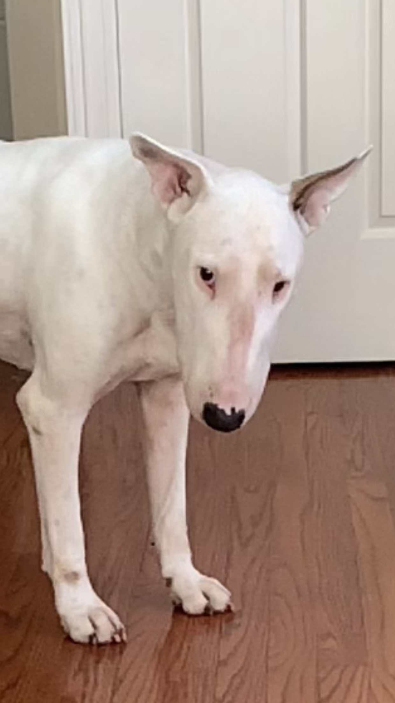
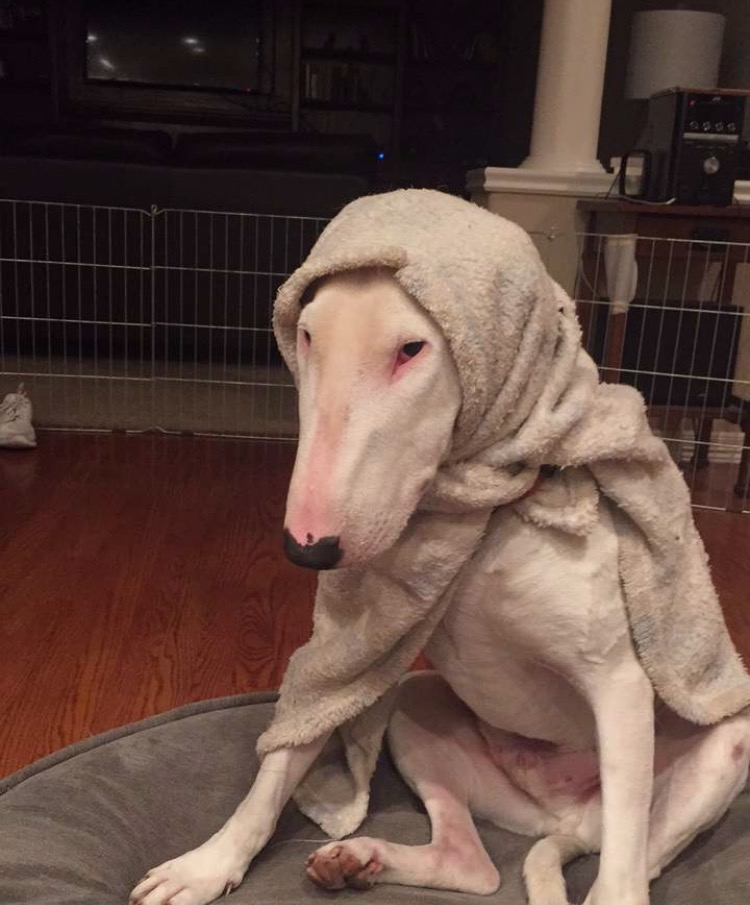
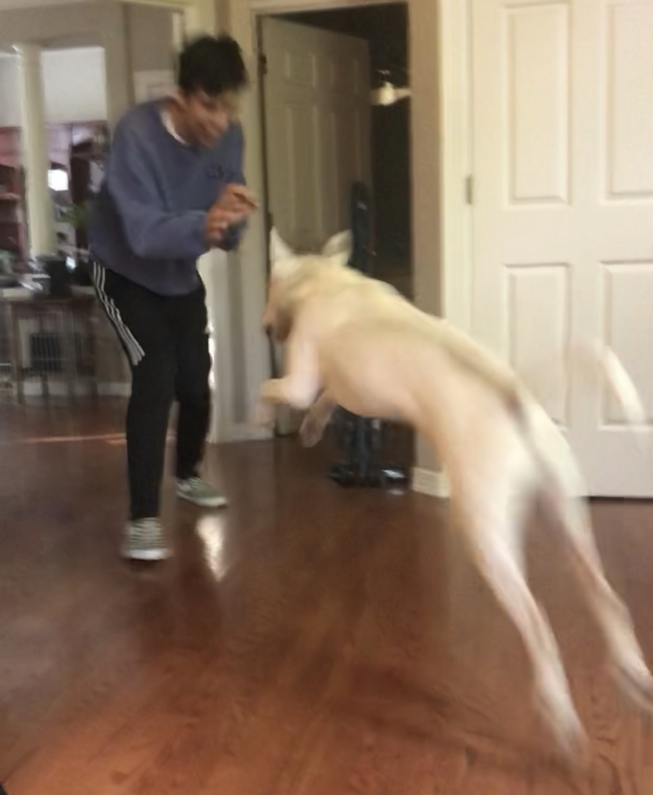

In this photo Paxi was yelling because he was extremely excited that Christmas was right around the corner.

In this photo Paxi is seen looking at you with a curious guize...wondering what you're up to.

In this photo Paxi has shades on because he's too cool for you.

In this photo my older brother Xavy is seen cradelling Paxi when he was only 3 years old(clearly he was enjoying it).

In this photo Paxi is seen sitting in a very regal manner, looking like a very good boy.

In this photo Paxi is seen with a very annoyed expression as my dad was petting his head.

In this photo Paxi is seen in his usual sitting position that we like to call "give me food please" or "ignore me i'm waiting for food to fall off the counter."

In this photo you can see Paxi after a rough night out at the club with his favorite blonde wig, looking very mangled.

In this photo you can see Paxi resting after a hard swim, so tired infact, that he left his goggles on.

In this photo you can see Paxi all bundled up for the cold winter season.

In this photo you can see Paxi ready for one of his daily ten mile walks, hat and all.

In this photo you see Paxi at his fullest potential, lunging at my brother in his usual playful fashion.

In the final photo we see Paxi sprawled on his stomach looking back at us and giving a lot of attitude as he suffocates his stuffed toy.